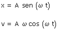
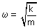
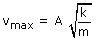

Ecuaciones del movimiento armónico:  La velocidad máxima (Módulo) valdrá: Vmax = A·ω Como recordará alguno que otro la relación frecuencia angular y constante elástica era:  Sustituyendo en la expresión de la velocidad máxima:  Aquí ya se ve que, a igualdad de masa y amplitud, tendrá la mayor velocidad máxima el cuerpo que esté unido al muelle de mayor k |